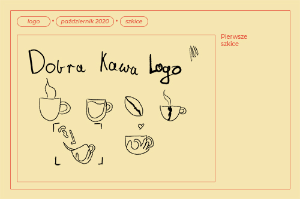
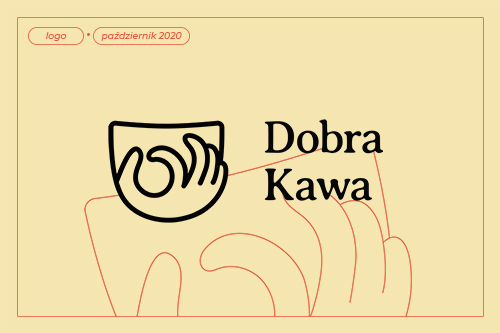
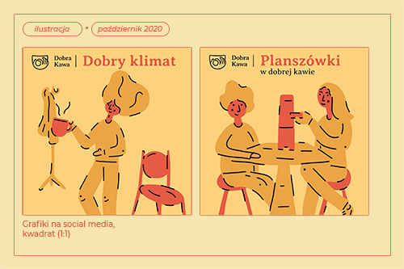

Łukasz Biernacki | 13.10.2020
Jak znaleźć prace jako (młody) grafik
Odpowiem od razu, nie wiem.
Nie ma jednej odpowiedzi na to pytanie, a
ten artykuł jest dla osób, które
posiadają już umiejętności i są o krok od zmonetyzowania
swojej pracy.
Planuję rozpisać ten temat na kilka artykułów.
Opiszę dokładniej sposoby dzięki którym,
możemy pozyskać klienta i przyjemne dla nas zlecenie.
A wszystko będę testował na sobie.
Tworzenie identyfikacji wizualnej dla wymyślonej marki.
Taki projekt zrealizowałem niedawno.
Zaprojektowałem niewielką identyfikację wizualną
dla kawiarni, którą nazwałem "Dobra Kawa".
Przeprowadzę Was przez proces tworzenia:
od wymyślenia nazwy po layout strony internetowej.
Czy są jakieś efekty? Narazie nie jestem w stanie stwierdzić.
Pokładam nadzieję, że poświęcony czas się zwróci.
Najlepiej w postaci zlecenia, ale nie byłbym taki optymistyczny.
Nowy obserwator na instragramie, czy nowe umiejętności
to też sowita zapłata.
Zaczynamy tworzyć markę.
1. Koncepcja
Założyłem sobie, że chcę stworzyć identyfikację wizualną dla kawiarni.
Przez wybór branży, mogłem przejść do następnych kroków projektowania, a narazie tworzenia.
Skoro sami tworzymy naszego klienta, jak najbardziej może on być z branży,
z którą chcielibyśmy współpracować. Jeśli potencjalny klient z interesującej nas dziedziny
zobaczy takie portfolio, z pewnością zwróci uwagę na projekt dotyczący jego branży.
2. Nazwa
Mamy już zarys dla kogo pracujemy, teraz czas na szkicową
nazwę. W mojej nazwie do słowa "Kawa", po prostu dodałem "Dobra", czyli "Dobra Kawa".
Na początku dobrze postawić na coś prostego, żeby nie tracić na to dużo
czasu - nazwę zawsze można zmienić, a w tym ćwiczeniu chodzi też o złapanie kreatywnego wiatru.
3. Logo i kolorystyka
Następnym krokiem jaki podjąłem było kombinowanie z logo.
Na tym etapie zaczyna się frajda z projektowania.

Wyżej moje początkowe szkice, dość szybko wybrałem finalną wersję.
Polecam Wam poszkicować trochę dłużej i więcej, ale nie za długo.
Jeśli jesteście perfekcjonistami, ustawicie sobie limit na jeden lub dwa dni.
Nie zapominajmy, że to tylko ćwiczenie.
Podczas szkicowania logo, warto już układać sobie w głowie,
jakie doświadczenia będzie dawać identyfikacja.
Postanowiłem, że emocje jakie ma wyrażać mój projekt to ciepło kawiarni
i ludzi, z którymi spędzami czas. Chciałem stworzyć przyjazną otoczkę
zapewniającą pewnego rodzaju bezpieczeństwo. Równocześnie z poczuciem
klimatu, pojawiła mi się w głowie kolorystyka. Mierzyłem w brązy i beże,
ostatecznie wybrałem barwę kremową, mglistą musztardę i kontrastującą czerwień.
Paleta barw poniżej.
W logo postawiłem na prosty, liniowy symbol.
Logo jest obrysem kubka i dłoni, ułożonej w gest “okej”.
Stosowanie gestów w symbolach nie jest bezpiecznym zagraniem, a szczególnie w projektach
międzynarodowych. Ale w mojej niedużej kawiarni nie wywoła to negatywnych reakcji,
z racji na demografię.
Pierwszy projekt.
Najpierw zwektoryzowałem logo z wypełnieniem, żeby lepiej złapać kształ.
Dwa elementy tworzące logo odzieliłem kolorami, dla dostrzeżenia kontrastu
i sprawdzenia czy kompozycyjnie jest w porządku. Przy projektowaniu symbolu,
dbam o to by dobrze wpisywał się w kwadrat, a już najlepiej gdyby był kwadratowy.
Optyka jest równie ważna co matematyka, dlatego nie bazuje na ściśle określonych
zasadach. Po ustaleniu kompozycji, zaminiłem kształty w zaoblony obrys i przy tym
stylu zostałem do końca. Od tego momentu, zaczyna się wielkie dłubanie przy moim
symbolu. Nic ciekawego wam tu nie pokaże, po prostu przesuwanie krzywych, trochę na wyczucie,
a trochę pomagałem sobie kształtami.

Na pierwszy rzut oka nic się nie zmieniło.
No i zmienić się nie miało, symbol potrzebował dopieszczenia.
Zmodyfikowałem krzywe w bardziej delikatne linie.
Dopracowałem koło utworzone z palców. Uciąłem uszko, które
poszerzało logo. I na koniec pogrubiłem obrys. Do całości dobrałem
szeryfowy font - averia sans libre. Wybrałem taki krój
przez rozlewające się litery, które kojarzą się z odbitym kubkiem kawy na stole.
Styl fontu to Regular, pasował najlepiej do obrysu logo.
Symbol skaluje się prawidłowo.
Na koniec z logo zrobiłem z niego animacje.
Tworzenie animacji na symbol dodaje trochę większego spojrzenia
na prace, mogę stwierdzić, że bardziej zrozumiałem moje logo.
Efekt możecie zobaczyć na moim instagramie.
link
Ilustracje, plakaty i inne
Kiedy miałem już mniej więcej dopracowane logo, zacząłem pracować
nad ilustracjami. W czasie projektowania ważne jest, żeby nie pracować w ciągu nad
jednym elementem, ale łapać oddech w innych elementach.
Projektowanie ilustracji, doprowadziło mnie do ostatecznej kolorystyki.
Zacząłem od samej postaci, ale grafika wydawała mi się zbyt pusta,
dlatego dodałem przedmioty kojarzące się z kawiarnią.
W górnej części dodałem logo i tekst, przedzielone kreską.
Po zaprojektowaniu pierwszej ilustracji, pojawiły się u mnie duże pokłady
kreatywności, i od razu narysowałem drugą ilustrację, a co ważniejsze
miałem już kompletny pomysł na całość identyfikacji.

Uznałem, że dwie ilustracje wystarczą, a następnym zaprojektowany elementem był plakat.
Treściowo również postawiłem na prostotę. Obrałem sobie za cel stworzenie plakatu
na wydarzenie muzyczne. Stylistykę już mam, dlatego narysowałem dwa instrumenty muzyczne,
lampy które jeszcze się przewiną w innym elemencie. Zauważyłem, że
warto stosować bardzo podobne, albo te same elementy na kilku pracach. Tworzy się wtedy
spójna całość, i patrząc na plakat, wizytówkę czujemy jakbyśmy byli w tym samym miejscu.
Gdyby moje zlecenie było prawdziwe zastosowałbym lampy z rzeczywistego wystroju
kawiarni. Takie zagranie może budzić emocje w odbiorcach. Plakat wygląda następująco.
Przed ostatnim elementem jest menu. Z menu jestem zadowolny,
można powiedzieć, że wykazałem się kreatywnością. Menu przedzieliłem na dwie części
z lewej strony jest wmiare tradycyjne menu, jedynie ceny są z drugiej strony niż zazwyczaj
w tego typu projektach. Kolor kartki, to rozjaśniony kremowy z palety barw, orginalny
był za ciężki. Z prawej strony chciałem uzyskać efekt kelnera podającego menu,
a w tle odsłonić trochę życia kawiarni. Przygotowałem jeszcze menu online zaprojektowane w kwadracie,
w którym widać jeszcze więcej aktywności.
Ostatnim elementem jest dodatek pandemiczny.
Jest to prosta kartka z ilustracją
i napisem zdezynfekowano.
Przeprowadziłem Was przez proces powstawania tej niewielkiej identyfikacji.
Chciałem przedstawić to zwięźle, i napewno pominąłem kilka mniej ważnych szczegółów.
Jeśli sami spróbujecie takiego ćwiczenia to możecie trafić na przeszkody,
jak wspominałem wyżej warto wtedy odskoczyć od projektu i zająć się czym innym.
Takie nieprawdziwe zlecenie będzie dobrze wyglądać w portfolio, ale zaznaczyłbym w
opisie, że to tylko ćwiczenie. Jeśli zobaczę wzrost liczby zleceń, albo zainteresowanie
podzielę się efektami. A Was zapraszam do próbowania!
Portfolio (Kliknij)